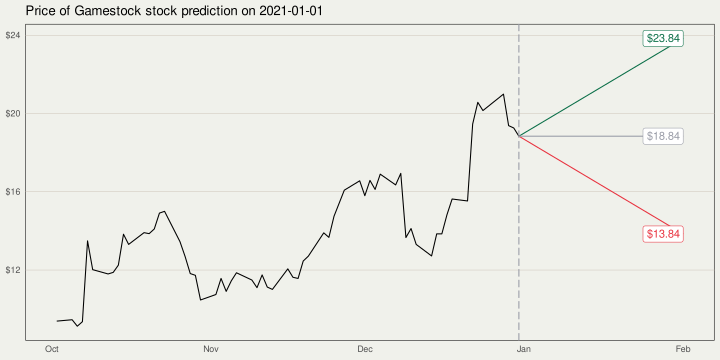

Why WallStreetBets isn’t Occupy 2.0:
How the Rise of Platforms can Disrupt Connective Action
Michael Vaughan (LSE), Johannes B. Gruber (ENS / VU Amsterdam), Ana Ines Langer (University of Glasgow)
APSAs Annual Meeting & Exhibition, September 15 2022
Case: GameStop Short Squeeze
r/wallstreetbets - GameStop Short Squeeze
- Early 2021: a “short squeeze” organised by Redditors costs hedgefund investors who bet against GameStop billions of dollars
- “What’s being accomplished now is what Occupy Wall Street tried and failed to do—a power shift, a shift in some control from Wall Street to Main Street.” – Jaime Rogozinski, founder of r/wallstreetbets
What is Shorting?
What is Shorting?

What Happened with the GameStop Stock?
Theory
Connective Action Framework
- Bennett and Segerberg (2013)
- Contrast to traditional collective action frames: symbolic inclusiveness and technological openness
- Occupy Wall Street slogan “we are the 99%” represented a personal action frame
Platform Power & Platform affordances
Platform affordances
| Ties between users | Clearer social group boundaries demarcating the subreddit as a “community” | Weaker network ties created through hashtags, which suggest mutual interest but not shared identity |
| Moderation | A clear set of rules specific to the subreddit (e.g. “no political bullshit”) which is primarily enforced by group moderators | No moderation apart from platform action against extreme / illegal content |
| Selection mechanisms | Upvoting: used primarily to establish the credibility of users and content | Algorithmic sorting based on likes + retweets + unknown other variables |
| Language | Monolingual (at the subreddit level, which is then also a feature of the platform infrastructure) | Multilingual |
Professional norms and practices of journalism
- Mainstream media is influenced by elite framing, as indicated by theories of indexing and cascading activation (e.g., Bell & Entman, 2011).
- Pressures of the news media business model contributes economic coverage which is ideologically narrower and even more oriented toward elite framing (Davis, 2018; Guardino, 2019).
- Business and financial news reporters are broadly too dependent on the knowledge and framing of insiders and often share outlook and interpretation of the insiders they are supposed to be reporting on (Schiffrin, 2015; Stiglitz, 2015).
Research Questions
- To what extent was the way Redditors discussed the short squeeze replicated on Twitter and in digital news?
- What potential role do platform affordances play in shaping divergence between Reddit and other digital spaces?
Data & Method
Data
- Number of Texts: 349,039
- Twitter 256,297
- all tweets using #GameStop (English, no bots)
- top 100 selected for manual coding,
- Reddit 91,321
- submissions to r/wallstreetbets (filtered with SVM classifier)
- top 100 selected for manual coding
- News: 1,421
- collected with search term “gamestop” from Media Cloud’s “U.S. Mainstream Media”
- Twitter 256,297
Method: topic models
- Implementation: Non-Negative Matrix Factorization (NMF) from Scikit-learn (Pedregosa et al. 2011)
- Similar to LDA topic models
- Produces document-per-topic (\(W\)) and word-per-topic (\(H\)) probabilities
- While LDA can only use integers, NMF can deal with all non-negative real numbers
- That means we can weight terms with tf-idf
→ better for shorter texts on  and
and  .
.
Method: manual coding
- We code 100 most “prominent” posts
- Reddit: prominence = upvotes
- Twitter: prominence = retweets + likes
- 4 categories
- political
- community-building
- call for action
- exclusive language
Results
Topic Models
Fig 1: Prevalence of Topics in the Reddit, Twitter and News models

Content Analysis
| Political | |||
| Anti-elitist | 6 (12%) | 17 (34%) | |
| Formal/institutional | 5 (10%) | 11 (22%) | |
| Informal/consumerist | 5 (10%) | 2 (4%) | |
| Non-political | 23 (46%) | 17 (34%) | |
| Unclear | 11 (22%) | 3 (6%) | |
| 50 | 50 |
Content Analysis (continued)
| Community-building | ||
|---|---|---|
| Yes | 13 (26%) | 4 (8%) |
| No | 31 (62%) | 44 (88%) |
| Unclear | 6 (12%) | 2 (4%) |
| 50 | 50 |
Content Analysis (continued)
| Exclusive language | ||
|---|---|---|
| Yes | 21 (42%) | 6 (12%) |
| No | 19 (38%) | 40 (80%) |
| Unclear | 10 (20%) | 4 (8%) |
| 50 | 50 |
| Calls to action | ||
|---|---|---|
| Yes | 10 (20%) | 3 (6%) |
| No | 35 (70%) | 45 (90%) |
| Unclear | 5 (10%) | 2 (4%) |
| 50 | 50 |
(Preliminary) Conclusion
- Reddit:
- drove collective (financial) action
- less influence in shaping understanding of events
- Twitter:
- action mobilisation took a backseat
- emphasised understanding and interpreting events
- news media:
- no calls for action
- high focus on the political context and implications of events
- omits anti-elitist sentiment of Twitter and Reddit
Next steps
Next steps
- Validation topic models
- we check temporal patterns in topic prevalence and compare them to external events (external validation) (Maier et al. 2018);
- we validate the topic model with word intrusion test and topic intrusion test using the oolong package (Ying, Montgomery, and Stewart 2021; Chang et al. 2009).
- Extend and validate manual coding
Thank you for your attention!
Find us at:
@mikekvaughan
@JohannesBGruber
@AnaInesLangerReferences
Chang, Jonathan, Sean Gerrish, Chong Wang, Jordan Boyd-graber, and David Blei. 2009. “Reading Tea Leaves: How Humans Interpret Topic Models.” In Advances in Neural Information Processing Systems. Vol. 22. Curran Associates, Inc. https://papers.nips.cc/paper/2009/hash/f92586a25bb3145facd64ab20fd554ff-Abstract.html.
Maier, Daniel, A. Waldherr, P. Miltner, G. Wiedemann, A. Niekler, A. Keinert, B. Pfetsch, et al. 2018. “Applying LDA Topic Modeling in Communication Research: Toward a Valid and Reliable Methodology.” Communication Methods and Measures 12 (2-3): 93–118. https://doi.org/10.1080/19312458.2018.1430754.
Pedregosa, F., G. Varoquaux, A. Gramfort, V. Michel, B. Thirion, O. Grisel, M. Blondel, et al. 2011. “Scikit-Learn: Machine Learning in Python.” Journal of Machine Learning Research 12: 2825–30.
Ying, Luwei, Jacob M. Montgomery, and Brandon M. Stewart. 2021. “Topics, Concepts, and Measurement: A Crowdsourced Procedure for Validating Topics as Measures.” Political Analysis, September, 1–20. https://doi.org/10.1017/pan.2021.33.